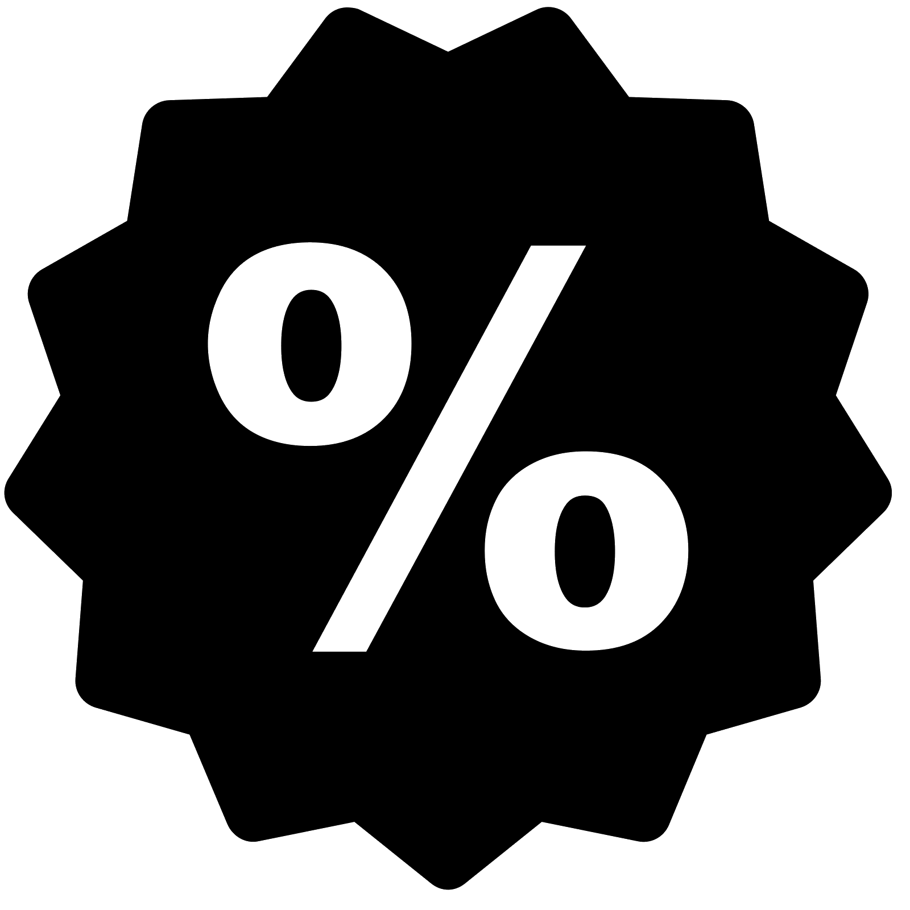

<!--
  Generated template for the AltaPedidoPage page.

  See http://ionicframework.com/docs/components/#navigation for more info on
  Ionic pages and navigation.
-->
<ion-header>

  <ion-navbar>
    <ion-title>Hacer Pedido</ion-title>
  </ion-navbar>

</ion-header>


<ion-content padding>
    <ion-row [hidden]=!esMozo>
        <ion-col text-center>
            <button ion-button round color="light" (click)="escanearQR()">
                <ion-icon color="secondary" name="qr-scanner" style="margin-right:5px;"></ion-icon>
                Reservar mesa 
            </button>
        </ion-col>
    </ion-row>

  <div [hidden]=esMozo>
    <button (click)="activarGPS()" [hidden]=esMozo> Tomar dirección actual  </button>  
    <input type="text" placeholder="Cargar dirección">
    <input type="text" placeholder="Cargar hora de entrega">
    <ion-fab center bottom>
      <button ion-fab  style="background-color:rgb(175,44,245);" (click)="irA('Todos')" ><ion-icon name="list-box"></ion-icon></button>
    </ion-fab>

    <ion-fab center bottom>
        <button ion-fab color="danger"><ion-icon name="game-controller-b"></ion-icon></button>
        <ion-fab-list side="top">
          <button ion-fab color="warning" (click)="irA('bebida')"><ion-icon name="wine"></ion-icon></button>
        </ion-fab-list>
        <ion-fab-list side="left">
          <button ion-fab color="light"></button>
        </ion-fab-list>
        <ion-fab-list side="right">
          <button ion-fab color="dark"></button>
        </ion-fab-list>
      </ion-fab>
  </div>
</ion-content>

